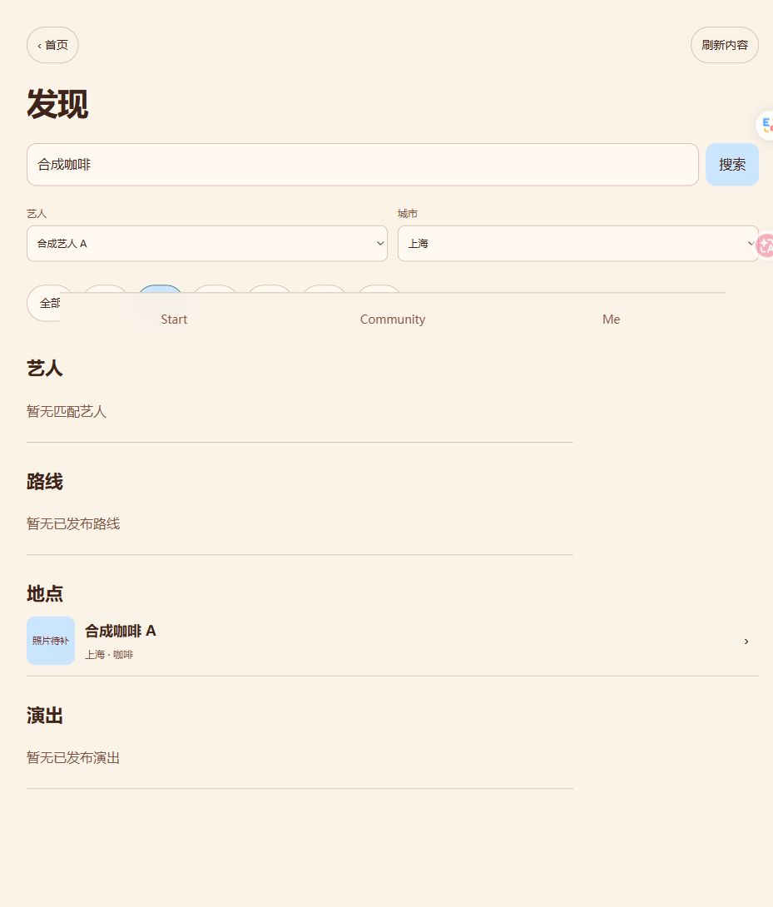

主题旅行 · 开发预览
START
从一条兴趣线索，
到一次有依据的选择
产品任务示意
主题线索
艺人或作品与城市
核验关联
回到来源，确认关系
选择地点
地址与当前条件
交接地图
确认目的地后交给地图
当前实现 · 真实合成检索局部

产品任务示意。真实界面局部使用合成数据，当前开放条件与地图交接仍在验证。
主题旅行 · 开发预览
产品任务示意
艺人或作品与城市
回到来源，确认关系
地址与当前条件
确认目的地后交给地图
当前实现 · 真实合成检索局部

产品任务示意。真实界面局部使用合成数据，当前开放条件与地图交接仍在验证。